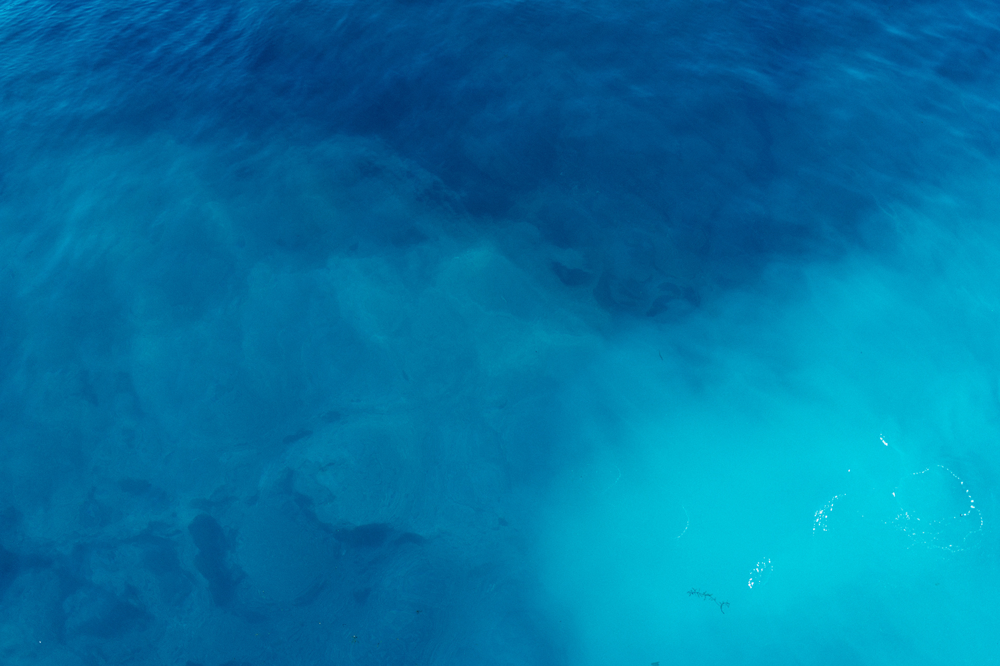

Pillar 01 · Scientific Innovation
Reliable water infrastructure starts at the molecular level. Our Bandung laboratory executes empirical treatability studies, membrane foulant autopsies, and custom reagent synthesis prior to skid fabrication.
Before a single membrane element is specified, we quantify ionic balance, BOD/COD load, colloidal silica saturation, Langelier Saturation Index (LSI), and trace heavy metals across seasonal feed variations.
Complete ionic balance verification, silica/carbonate scaling ceilings, and regulatory compliance delta.
Exact jar-test coagulation dosing, filtration micron staging, and UF flux ceilings to protect RO elements.
Stage-by-stage osmotic pressure and permeate quality modeling confirming stable recovery up to 85%.
Commodity dosing chemicals frequently trigger irreversible membrane compaction. Our chemists formulate custom antiscalants, non-oxidizing biocides, and polymeric coagulants verified for NSF/ANSI 60 compliance.
| Reagent | Classification | Operating Threshold | Compatibility | Export Packaging |
|---|---|---|---|---|
| N-ScaleStop Pro | High-Silica Antiscalant | Inhibits reactive SiO₂ up to 350 ppm | DuPont FilmTec, Toray, Hydranautics | 25 kg / 200 kg / IBC |
| N-BioClean | Non-Oxidizing Biocide | Zero chlorine oxidation of polyamide | Thin-Film Composite RO & NF | 25 kg / 200 kg Drum |
| N-Flocc Ultra | Polymeric Coagulant | Rapid flocculation, zero Al carryover | Industrial DAF & UF Pretreatment | 200 kg Drum / 1,000L IBC |
Every industrial skid can integrate our encrypted cloud telemetry engine. Plant engineers and our Bandung support desk monitor normalized permeate flux, differential pressure (ΔP), and chemical dosing across cellular or satellite links.
Send raw water samples to our Bandung lab for a full spectrometry dossier and sizing projection.
Schedule Lab Sample Testing